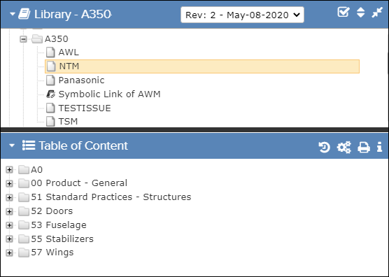
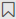
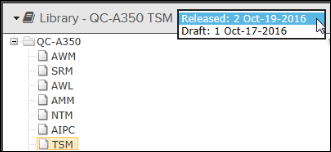
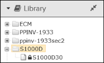
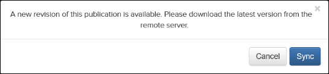
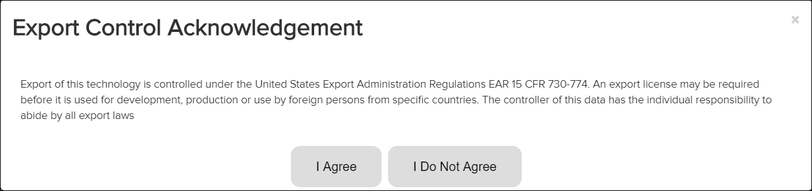
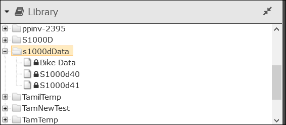
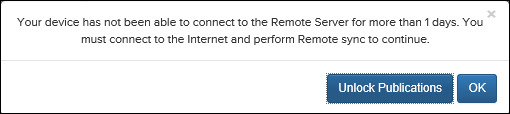
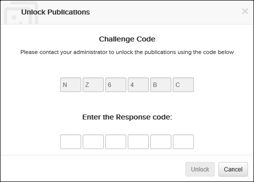
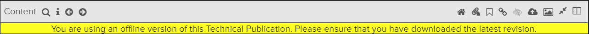

The Library pane lists all projects available in the application. Depending on the setup of Pinpoint, this could be publications from Visit Manager or content on the Pinpoint 7 Repository, uploaded via the Data Manager module.
When a project is selected, you will see the publications contained in that project. When selecting a publication, the publication hierarchy is displayed in the Table of Content section below.

Library and Table of Content
When switching from one project to another, the application opens the new project in a new browser tab. You need to confirm that you allow the application to open a new page. The new tab gets the name of the project you open.
| Component | Description |
|---|---|
| minimize pane icon / maximize pane icon | Click this icon to minimize/maximize the Library pane. |
| Library header | If a project is selected, the Library header shows the
name of the selected project. If the publication has more than one revision and you have the proper permissions, the header has a revision selection drop-down list that allows you to select a revision. Refer to Revision Selection. |
Not applicable for Pinpoint Standalone Light. Note: This icon only shows for users with the Can
reorder library list privilege.
Click this icon to open the
Reorganize Libraries or Reorganize <selected
library> dialog. The dialog allows you to manually change the order
of libraries and/or publications through a drag-and-drop interface (only one
library can be dragged at a time). As soon as you click the
Save button, the Library pane
shows the same order for the libraries and/or publications that you set with the
dialog. Every other Pinpoint or Pinpoint Mobile online user who
refreshes or logs in after you have clicked the Save button
will also see the new library order.Note: If you do not select a library, the
order of all root libraries is changed. If you select a library, the order of
the direct children in that library is changed.
|
|
| Click this icon to minimize/maximize the entire column of panes (including the Library and Table of Content panes). | |
| Click this icon to see contained publications. | |
| Click this icon to see the publication content in the Table of Content pane. | |
| symbolic link icon | This icon indicates the publication is a symbolic publication. When you view the publication, the metadata (revision number, release status, release date, etc.) is for the original (target) publication. The Table of Content is also for the original publication. |
 Add Bookmark |
This icon appears when you hover over a publication name in the
Library pane. Click the icon to apply a bookmark at the
publication level. The icon changes color when you add the bookmark. Click the Remove Bookmark icon to delete the bookmark. |
Revision Selection
Not applicable for Pinpoint Standalone Light.
If the publication has more than one revision, the Library header shows a drop-down list that allows you, if you have the correct privileges, to select which revision of the publication you want to view. This is an example of an A350 publication:

- You need to have read permission for the Can release or rollback draft revisions privilege to be able to see the drop-down list and switch between multiple revisions. Without this permission you can only see the latest released versions of the publications for which you have read permissions.
- With the Can release or rollback draft revisions privilege, you can also release, rollback, or reload revisions. Refer to Working with Revisions for more information.
- If you have read permission for the Can view any permitted revisions privilege, you can view all prior revisions of the publications for which you have read permissions.
Access to Current Revisions Only
Not applicable for Pinpoint Standalone Light.
If your administrator has enabled the Can access current revisions only privilege, a
 lock icon
appears before the publication name for publications with a new revision. For example:
lock icon
appears before the publication name for publications with a new revision. For example:

When you select a locked publication, an alert appears:

Click the Sync button to update the publication to the latest revision.
Export Control Acknowledgement

Connection to Remote Pinpoint Data Manager Server
Not applicable for Pinpoint Standalone Light.

When you select the locked publication, a message appears:

- Click the OK button to check your internet connection. If there
is a connection available, the
 lock icon is removed. Otherwise, the warning message appears
again.Note: If there is a connection available, the lock icon is
also removed when you refresh the page.
lock icon is removed. Otherwise, the warning message appears
again.Note: If there is a connection available, the lock icon is
also removed when you refresh the page. - If you are unable to connect to the internet and perform a sync, click the
Unlock Publications button to generate a challenge code to send
to the administrator. The Unlock Publications dialog
appears:

- Provide the Challenge code to the administrator. The administrator uses that code
to generate a Response code in Data Manager to send to you.Note: The administrator must have permissions for the Can generate response code to unlock publications privilege.
- Enter the Response code in the Unlock Publications
dialog:

- Click the Unlock button to unlock and access the publication.
- Provide the Challenge code to the administrator. The administrator uses that code
to generate a Response code in Data Manager to send to you.
Offline Warning Message
